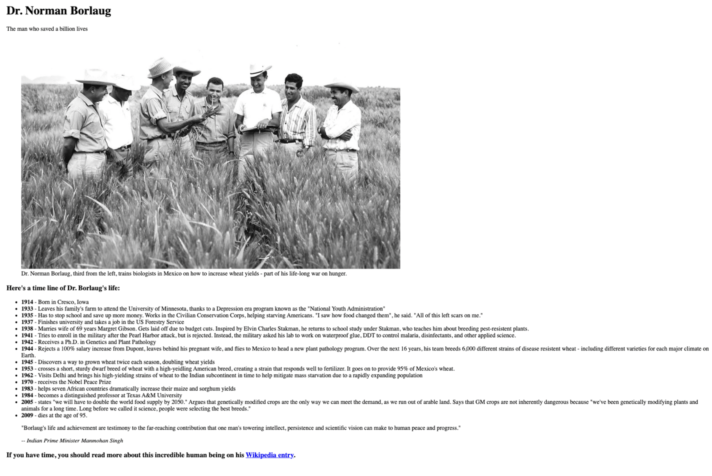

Portfolio
c'est mon projet portfolio, c'est un dossier dans lequel mes acquis de formation et de l'experiebce sont definis et demontrés

Dr norman
c'est le projet Dr norman borlaug. ici, je parle de la vie de ce dernier, c'est un agronome amériricain, né le 25 mars 1914 à Cresco et mort le 12 septembre 2009 à Dallas. Consideré comme le père de la Révolution verte, il a reçu le prix Nobel de la paix en 1970.